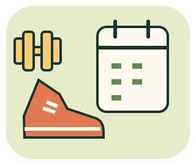

MOVE / PLAN / RECOVER
運動健身
小學堂
有動，不代表練的是同一件事。
看懂強度、排出可行安排，也知道什麼時候該停。

不用真的跟著做，也能玩
12 個原創任務：活動分類、說話測試、流程排序、阻力與節奏、每週安排、恢復與高溫情境。沒有體重、熱量、步數或硬撐時間排行榜。
以18–64歲虛構成人與明示條件為例，不是個人運動處方或體能檢測。不限時，不需要相機、穿戴裝置或當場運動；如有不適先停止並適當求助。未成年、孕產、慢性病或受傷等情況需依自身狀況取得合適建議。本輪資料只在分頁記憶體，重新整理清空，不儲存或上傳。
選擇任務
來源查核：2026-11-13。情境、人物與資料是教學示例，不是你的即時生理測量。
動手安排與判斷
概念說明與一種參考做法
參考做法不是唯一有效解法；查看會記錄為曾看參考。
目前安排與觀察
計分只反映本輪知識／模擬安排，不代表真人做了運動、體能提升或醫療判斷正確。
學習回顧
學完帶走三件事
- 起步可以小，強度依個人反應，不能用同一速度或流汗量判斷所有人。
- 有氧、肌力、逐步適應與恢復各有角色；不靠「今天越累越好」評分。
- 高溫、疼痛或嚴重警訊出現時，調整、停止或求助都是合理行動。
CDC 成人活動建議／說話測試／NHS 暖身說明。其餘來源列於相關任務。